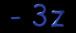

Oh shit!
??????
Ya know.. I just noticed on the accual page this college is related to the
Presbyterian Church.. so if I offended you... well.. that's life.. get used to
it.
So so.. a college site that just wasn't set up right.. thats life
too.... who the hell set this up anyway? Constant blabbering.. what the hell
else is there to put on a hack page?
I'd like to think that getting a
college page is sort-of an accomplishment.. probably not..
OHHH! I almost
forgot.. look out for Back Orifice 2000,
making its first appearance at Defcon (July 10, 1999) in vegas!
oh.. and exovus is a spamming pimp.. and uhm.. hey tle.. hows it goin?
sh0utZ 2: my crew, my possy, my.. whatever.. claimed another for playland..
lala.
oh.. and Jerry Farwell can go suck a big fat cock.
I guess that's about all.. until next time, bye bye!

-=- threeZee -=-